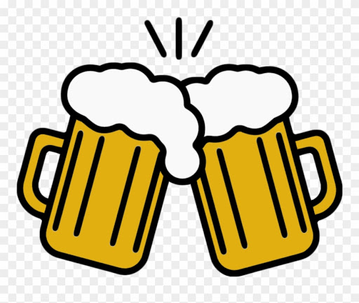

A pub, or public house, is an establishment licensed to serve alcoholic drinks for consumption on the premises. The term public house first appeared in the late 17th century, and was used to differentiate private houses from those which were, quite literally, open to the public as 'alehouses', 'taverns' and 'inns'. By Georgian times it had become common parlance, although taverns, as a distinct establishment, had largely ceased to exist by the beginning of the 19th century.[1] Today, pubs have no strict definition, but CAMRA states a pub has four characteristics:[2] is open to the public without membership or residency serves draught beer or cider without requiring food be consumed has at least one indoor area not laid out for meals allows drinks to be bought at a bar (i.e., not only table service) The history of pubs can be traced to Roman taverns in Britain,[3][4] and through Anglo-Saxon alehouses, but it was not until the early 19th century that pubs, as we know them today, first began to appear. The model also became popular in countries and regions of British influence, where pubs are often still considered to be an important aspect of their culture.[5][6][7] In many places, especially in villages, pubs are the focal point of local communities. In his 17th-century diary, Samuel Pepys described the pub as "the heart of England".[8] Although the drinks traditionally served include draught beer and cider, most also sell wine, spirits, coffee, and soft drinks. Many also offer meals and snacks. A licence is required to operate a pub and the licensee is known as the landlord or landlady, or the publican. Often colloquially referred to as their "local" by regulars,[9] pubs are typically chosen for their proximity to home or work, good food, social atmosphere, the presence of friends and acquaintances, and the availability of pub games such as darts or snooker. Pubs often screen sporting events, such as rugby and football. The pub quiz was established in the UK in the 1970s.